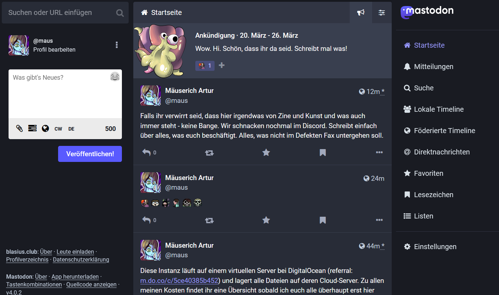

Mastodon Reckoning of Blasius
After a long time of shabby googling, uneducated guessing and no time at all, I managed to set up my very own Mastodon instance. I genuinely loved it, and it brought me back to some great feelings that I had when I wrote silly bots and websites. This project is not only one from passion, but it's an attempt to move closer to a friend group that I thoroughly treasure. Mending together two creative ideas into one is what I am trying to achieve here, but we will see how it goes. It all is a test run..
The Fediverse is something that I was very wary of at first glance. It seemed ambitious, difficult to dip your toes in, and coming from a long-past social media addiction, it seemed dangerous to me. After reading Darius Kazemi's essay on running your own social media, I began to think. On this hypothetical plattform I would be free off those hypothetical eyes that I dream off when I post on Twitter or Instagram. I am free to write in the language I feel the most rhetorically-skilled, and I can share it with a handful of people that I truly love. There is no shame and no desire to be seen, yet it's a neighborhood where I want to belong to. It reminded me of a private Minecraft Server that I had with some friends. You can be more intimate, make mistakes, and learn together. You can also share the things you are proud of knowning that people will see it. Now how all this may come to fruition was a totally different deal.
I used to work with DigitalOcean a lot back in the day because I simply loved the ease of use. I could go nuts on my own Linux machine, I had all the stats, I could switch it all off in a second. Now over the time, I didn't have a clear view on what I was spending all those resources on. God, I threw so much money away for a silly little Discord bot. But those were skillsets that I acquired that really helped me on this little journey. I set up a mail server for the very first time using Mailjet, which was less fun than I thought. I got banned within the very first five minutes because of a very silly mistake, and had to go through support ticket hell which was resolved within a few days, fortunately. Setting up the instance itself was really damn easy and I was so thrilled to have used this old domain of mine for a good cause.
Now, what would I use this server for? I still am unsure and looking for activity ideas. Maybe some of you have a fun way to engage with your small communities. Please let me know. Right now, I will try to show everyone what they can do on the platform. Now is the time to get accustomed to everything and set up a good workflow to add functionality to the instance. It's the time to draw some cool images, banners, assets, and maybe even animations. I want this space to remain playful and inviting to me friends, and I would love to share my progress in the future with everyone.
My friends and I are artists, gamers and free minds, and we have been thinking about making a zine together for the longest time. I believe, it would be just wonderful to gather all things we create on a private social plattform where we have full control. I would just love to see it all come together in a final, printable zine that I can share with everyone. Now is definitely a time to use the web for self-expression and I better do my best to turn my friends into believers.
